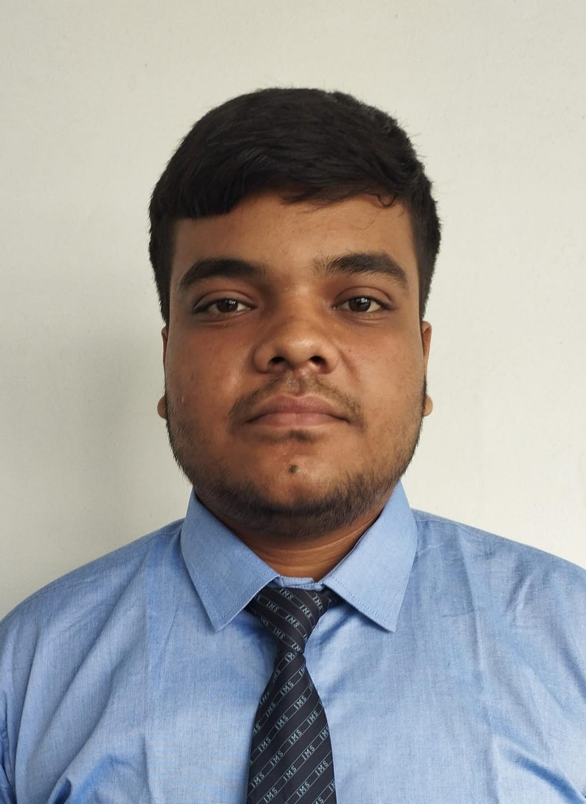

📧 rastogi21yr@gmail.com | 📞 +91-7417069839 | LinkedIn
Creative thinker with a passion for developing modern web applications. Experienced in building SEO-friendly websites and full stack MERN projects. I enjoy solving real-world problems through technology and creating impactful digital solutions.
AI assisted grievance platform with database integration and chatbot support.
Machine learning web application that predicts customer churn based on data.
Pet adoption platform backend with database management.
AI chatbot application built for better user interaction.
B.Tech – Computer Science & Design
IMS Engineering College, Ghaziabad
2023 – 2027 | CGPA: 7.54
Intermediate
KCM School, Moradabad | 2022–23
High School
KCM School, Moradabad | 2020–21
Vice President
Language Legacy Club
IMS Engineering College, Ghaziabad
September 2025 – Present